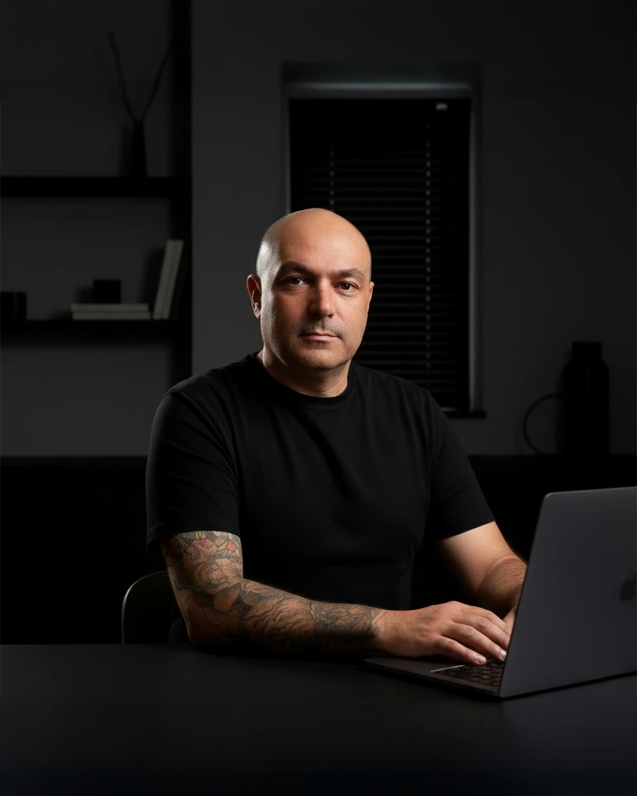

Vinte e quatro anos entre publicidade, design gráfico, agências e estúdios, com passagem pela State Design, estúdio internacional que atende marcas globais. Hoje conduz a Rooker, estúdio de branding e rebranding para empresas estabelecidas. A base é São José dos Campos (SP), e o atendimento chega a empresas de todo o Brasil.
Kleber Viola
Estrategista de marca, fundador da Rooker

O método, o padrão estético e o argumento por trás de cada decisão vêm dessa trajetória.
Do trabalho global à decisão de fundar um estúdio próprio.
A trajetória começou em projetos brasileiros e passou por agências e estúdios até chegar à State Design. Foi ali que o critério estético e o rigor de método se consolidaram. Não como técnica aprendida em curso, mas como padrão construído projeto a projeto, na exigência de marcas que não toleram improviso.
Esse período definiu três coisas que hoje estruturam o trabalho da Rooker.
Pensamento sistêmico.
A marca como sistema, não como decisões isoladas sobre logo, cor ou tipografia.
Método.
Processo com etapas e argumento, não improviso apoiado em referência visual.
Padrão internacional.
Critério formado ao lado de marcas globais, longe da estética genérica que satura o mercado.
A Rooker nasceu de uma decisão clara: levar esse padrão a outro tipo de cliente. São empresas estabelecidas, fora do circuito das grandes marcas, que precisam do mesmo nível de rigor e raramente têm acesso a ele.
Trabalhos na State Design
Alguns dos projetos feitos no estúdio, entre 2021 e 2024.
Solo por escolha, não por estágio.
Na Rooker, quem diagnostica é quem entrega. Cada projeto recebe atenção integral do fundador, da primeira conversa à apresentação final. Não há repasse para júnior, nem terceirização da parte que importa.
Essa escolha vem de anos vendo o que acontece quando um estúdio cresce antes de consolidar método. O cliente contrata pela credencial do fundador e recebe a entrega de outra pessoa. Na Rooker, essa dúvida não existe.
Estrutura enxuta não quer dizer projeto menor. Quer dizer conversa direta, decisões concentradas e padrão sem concessão. É o mesmo modelo dos estúdios boutique que atendem marcas globais.